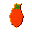

Tier 1 — Stone¶
Camp industry. Build the first heat you control — kilns turn wood into charcoal and clay into ceramics.
16 quests · 14 on the win-path · 1 branches
Camp Industry, Without Metal¶
Stone camp -- routine, buffers, and controlled heat¶
Still no metal. That's fine -- this tier is about turning your scrappy survival setup into something that actually runs:
- cordage + basic tools
- a controlled hearth with real fuel discipline
- charcoal for reliable high heat
- clay containers fired into proper ceramics
- dry storage and grain grinding
- food buffers + basic sanitation
Tip · If your camp runs on purpose, Tier 2 can start asking for real metallurgy.
Background
What changes between Tier 0 and Tier 1¶
Tier 0 proves you can survive a night.
Tier 1 proves you can stay stable while doing actual work: - fewer emergency trips - more stuff in reserve - better heat control - tools that save time
That's the bridge to metallurgy.
Formalize the Marker (Camp Utility I)¶
Unlocks after: Camp Industry, Without Metal
Formalize the marker (Camp Utility I)¶
Reinforce the marker spot with a small kit: rope, bundled branches, stones.
Not magic -- you're just establishing "this is where tools and materials live." That one habit saves more time than any single tool.
Tip · Branch bundle: gather sturdy branches or forest twigs, then bind them with rope or plant fiber. Hover branch_bundle in your inventory and press R to see the exact recipe.
Do this:
- retrieve Have or place your camp marker at the work spot.
yields: CM camp marker (simple)×1
- retrieve Pay the Camp Utility I kit (reinforcement materials).
camp marker (simple)×1
- retrieve Pay the Camp Utility I kit (reinforcement materials).
yields: RO rope×1 BB
rope×1 BB branch bundle×1 RR
branch bundle×1 RR rounded river stone×2
rounded river stone×2
Background
What this is (historically)¶
Not an upgrade -- just a fixed place where tools and habits live: - a known working surface - ties always on hand - materials kept where you use them
Tip · Quest consumes the kit to represent building/reinforcing the station at camp.
Fuel Discipline (Dry Buffer)¶
Unlocks after: Formalize the Marker (Camp Utility I)
Fuel discipline (dry buffer)¶
You will need dry wood constantly. Get ahead of it now.
Build a rack, keep it stocked. Rainy days don't get to delete your progress if you have a buffer.
Do this:
- retrieve Have or place a firewood rack in camp.
yields: FS firewood storage rack×1
- retrieve Stock a basic dry buffer (small logs, medium logs, kindling).
firewood storage rack×1
- retrieve Stock a basic dry buffer (small logs, medium logs, kindling).
yields: SD small dry log×12 MD
small dry log×12 MD medium dry log×6 DK
medium dry log×6 DK dry kindling sticks×16
dry kindling sticks×16
Background
The point¶
You are not hoarding. You are buying reliability.
Tip · A buffer also lets you focus on building things instead of constantly re-gathering fuel.
Charcoal Clamp (Predictable Heat)¶
Unlocks after: Fuel Discipline (Dry Buffer)
Charcoal clamp (predictable heat)¶
Charcoal is wood transformed into portable, reliable heat -- it burns hotter and steadier than raw wood.
Build an earth-mound clamp and run a first batch. This isn't smelting fuel yet -- it's just "better heat for the kiln."
Load it. Start it. Walk away. It doesn't need you standing there.
Do this:
- retrieve Have or place a charcoal clamp / earth-mound kiln.
yields: EM earth-mound charcoal clamp×1
- produce Produce a first batch of charcoal.
earth-mound charcoal clamp×1
- produce Produce a first batch of charcoal.
Background
Why charcoal first¶
You can fire ceramics more reliably with charcoal than raw wood -- hotter, steadier, more controllable.
Making charcoal takes time and a lot of wood. That's intentional. It keeps things moving at a realistic pace.
Clay Work (Greenware)¶
Unlocks after: Formalize the Marker (Camp Utility I)
Clay work (greenware)¶
Gather workable clay and shape some pots.
Unfired clay is fragile -- it's called greenware, and yes, it will break if it gets wet. This step is about forming, not firing. The kiln comes next.
Tip · Where to get clay: at the camp marker, craft e1_wash_dirt_for_clay -- 4× dirt + 1× bark_bucket_water + 1× plant_fibers -> 1× clay. The dirt is mined from any grass/soil terrain; the plant fibers act as a sieve to settle the heavy clay fraction out of the dirt slurry. Slow and lossy on purpose -- real clay-from-soil yields ~25%. Hover clay and press R to see the recipe.
Tip · Hover clay_pot and press R to see the shaping recipe (4 clay -> 1 pot at the camp marker).
Do this:
- retrieve Collect workable clay.
yields: RC raw clay×20
- craft Hand-shape clay pots (greenware -- unfired).
raw clay×20
- craft Hand-shape clay pots (greenware -- unfired).
yields: CP clay pot (greenware)×4
clay pot (greenware)×4
Background
Honest early ceramics¶
The earliest pots were hand-coiled, sun-dried, and fragile. People used them anyway -- even a leaky clay bowl beats carrying water in cupped hands.
Firing came later, once someone noticed that pots left near a fire got harder.
The dirt-wash method (elutriation) is how clay was actually separated from soil for thousands of years before commercial clay deposits were exploited. The water + fiber sieve is older than agriculture.
Fire Clay Into Ceramics¶
Unlocks after: Clay Work (Greenware), Charcoal Clamp (Predictable Heat)
Fire clay into ceramics¶
Build a simple earthen kiln and run your first firing.
Unfired clay is mud with ambition. Fired clay is actually durable. This is the difference.
Load it. Start it. Walk away. It doesn't need you standing there.
Do this:
- retrieve Have or place a simple earthen kiln.
yields: EU earthen updraft kiln×1
- produce Fire a first run: bricks and vessels.
earthen updraft kiln×1
- produce Fire a first run: bricks and vessels.
Background
What firing changes¶
Unfired clay hates water and cracks from impacts. Fired clay survives both.
Once ceramics exist, storage and cooking stop being constant emergencies.
Containers Online (Carry + Store)¶
Unlocks after: Fire Clay Into Ceramics
Containers online¶
A container at camp means one fewer trip per day. Stack enough and suddenly you're not running back for water every hour.
Keep a water bucket at camp and some fired vessels for storage and carry.
Do this:
- retrieve Have a water bucket available in camp.
yields: BB bark bucket×1
- retrieve Keep a full bucket of water at camp.
bark bucket×1
- retrieve Keep a full bucket of water at camp.
yields: WF water-filled bark bucket×1
- retrieve Have fired vessels ready for storage and carry.
water-filled bark bucket×1
- retrieve Have fired vessels ready for storage and carry.
yields: EV earthenware vessel×2
earthenware vessel×2
Background
What changes¶
When you can carry and store reliably: - you stop re-fetching basics constantly - you can buffer food and water - your hands are free to actually do work
Dry Storage (Pit Cache)¶
Unlocks after: Formalize the Marker (Camp Utility I)
Dry storage (pit cache)¶
Grain you gathered last week can still feed you today -- if you stored it right.
Get a starter batch and put it somewhere covered and dry.
Do this:
- retrieve Gather a starter batch of grain or seeds.
yields: WG wild grain×20
- retrieve Have or place a covered pit cache for dry storage.
wild grain×20
- retrieve Have or place a covered pit cache for dry storage.
yields: PS pit storage cache×1
pit storage cache×1
Background
Reality¶
Grain and seeds store well when kept dry and away from moisture. The cache is the invention: it makes time and distance cheaper.
Grinding (Saddle Quern)¶
Unlocks after: Dry Storage (Pit Cache)
Grinding (saddle quern)¶
Stored grain is potential. Ground grain is food you can actually cook with.
Get a saddle quern and grind a starter batch of meal and flour. It's one of the oldest labor tools in human history -- probably for good reason.
Do this:
- retrieve Have a saddle quern available (crafted or obtained).
yields: SQ saddle quern×1
- produce Grind a starter batch of meal and flour.
saddle quern×1
- produce Grind a starter batch of meal and flour.
Background
Why this matters¶
Meal for porridge and simple breads. Flour for better recipes later.
The quern is a genuine bottleneck early on -- which is the point.
Food Buffer (Tomorrow Isn't Luck)¶
Unlocks after: Grinding (Saddle Quern), Containers Online (Carry + Store)
Food buffer (tomorrow isn't luck)¶
Put food somewhere on purpose and leave it there.
A bad day shouldn't erase a week of progress. Stock enough to cover a couple rough days.
Do this:
- retrieve Have or place a food storage pit in camp.
yields: FS food storage pit×1
- retrieve Have a small buffer of safe foods ready.
food storage pit×1
- retrieve Have a small buffer of safe foods ready.
yields: SB safe berries×10 SN
safe berries×10 SN safe nuts×5
- produce Cook a couple simple rations at the hearth.
safe nuts×5
- produce Cook a couple simple rations at the hearth.
Background
Buffer definition¶
Not endless stockpiles -- just enough that a single bad day doesn't delete progress.
Tip · This is also where spoilage mechanics can come into play later.
Camp Zones + Sanitation¶
Unlocks after: Formalize the Marker (Camp Utility I), Fuel Discipline (Dry Buffer)
Camp zones + sanitation¶
Keep sparks away from bedding. Keep waste away from everything. Keep food storage separate from both.
That's it. That's the whole quest. It's boring, it's historically accurate, and it genuinely matters.
Do this:
- retrieve Have or place food storage, a waste midden, and a fuel rack as separate camp zones.
yields: FS food storage pit×1 CW
food storage pit×1 CW camp waste midden×1 FS
camp waste midden×1 FS firewood storage rack×1
firewood storage rack×1
Background
Why this is historically honest¶
People learn quickly: - don't sleep next to sparks - don't store food next to waste - don't let the whole camp become a trash smear
A midden is primitive sanitation -- unglamorous, but real.
Basic Stone Toolkit¶
Unlocks after: Formalize the Marker (Camp Utility I), Fuel Discipline (Dry Buffer)
Basic stone toolkit¶
Build the set of tools you'll reach for every day:
- Hammerstone -- strikes, cracks, and flakes
- Stone flake -- cuts and scrapes
- Hafted knife -- more control than a bare flake, safer too
- Ground axe -- actual wood processing without suffering
You've been improvising. Stop that.
Tip · Two stone types, two paths: smooth stone_river_rounded drops from rocks (and is the preferred form for knapping flakes). Rougher generic stone also drops from rocks, OR you can hand-cleave a river stone into chunks (t0_hand_cleave_stone, 1:1). The ground axe and quern saddle recipes ask for plain stone; the hammerstone and knife flake recipes use stone_river_rounded. Hover each tool and press R to see which form its recipe wants.
Do this:
- retrieve Have the full basic stone toolkit available (crafted or obtained).
yields: H( hammerstone (hafted)×1 SF
hammerstone (hafted)×1 SF stone flake×1 HS
stone flake×1 HS hafted stone knife×1 GS
hafted stone knife×1 GS ground stone axe×1
ground stone axe×1
Background
Tool roles¶
- Hammerstone: percussion, shaping, cracking
- Flake: cutting and scraping
- Hafted blade: stronger, controllable, safer grip
- Ground axe: wood processing at a reasonable pace
The "river-rounded vs cleaved chunk" distinction mirrors real stone-age toolmaking: tumbled cobbles knap predictably, rougher fragments are better stock for grinding because they hold a flat face when worked.
First Furrow¶
Unlocks after: Basic Stone Toolkit
First Furrow¶
You have seeds from the survival chapter. Now actually use them.
The hoe is in your stone toolkit. Equip it and swing at any grass or dirt terrain to till a patch. Walk up to the tilled soil with seeds in your inventory and press F to plant.
Crops grow over time. Come back when the color changes to bright -- press F to harvest. You get the crop plus a seed back, so the loop sustains itself.
Recommended start: plant turnips first (fastest growth), then carrot once you have the hang of it.
Tip · Crops will be eaten by nearby animals if there's no scarecrow. Craft one from 2 forest twigs + 2 bark strips at the hand grid and place it within ~20 studs.
Tip · Farm plots are excluded from the erosion system -- tilled soil won't revert while seeds are planted.
Do this:
- retrieve Have seeds ready (carrot or turnip -- sort seed mix at the camp marker if needed).

yields: CS carrot seed×2 TS
carrot seed×2 TS turnip seed×2
- retrieve Harvest your first crop.
turnip seed×2
- retrieve Harvest your first crop.
yields: WC wild carrot×2
- retrieve Optional: also harvest turnips for a mixed food buffer. optional
wild carrot×2
- retrieve Optional: also harvest turnips for a mixed food buffer. optional
yields: TU
Rewards: CS carrot seed×6 TS
carrot seed×6 TS turnip seed×6
turnip seed×6
Background
Why farm?¶
Hunting and foraging work, but they're unreliable and distance-dependent. A farm works while you're doing other things.
Two rows of turnips takes less time per calorie than any hunting route, doesn't require knowing biomes, and produces seeds so the supply is self-sustaining from the first harvest.
Once farming is running, food becomes a background resource rather than a daily emergency.
Meat on the Rack¶
Unlocks after: Food Buffer (Tomorrow Isn't Luck)
Meat on the Rack¶
Foraging covers calories. Hunting covers protein, hide, and tools.
Set up a butchering block and a drying rack. These two stations close the hunting loop: kill an animal → butcher for carcass → drying rack for rawhide cord, dried meat, or hides.
How to hunt: Equip a stone flake (or any tool) from your hotbar. Walk up to a passive animal and left-click to strike. Collect the carcass with F.
At the butchering block (press F with carcass): - Meat → cook at campfire for food - Hide → drying rack for rawhide cord (strong lashing; better than rope for some items) - Bones → tools, meal, or decoration
At the drying rack: - Raw hide → rawhide cord (drops in a few in-game hours) - Raw meat → dried meat (preserves without a campfire)
Do this:
- retrieve Have or place a butchering block and a drying rack.
yields: DR drying rack (survival)×1 BB
drying rack (survival)×1 BB butchering block (basic)×1
- retrieve Have some rawhide cord (butcher an animal, put the hide on the drying rack).
butchering block (basic)×1
- retrieve Have some rawhide cord (butcher an animal, put the hide on the drying rack).
yields: RC rawhide cord×2
- retrieve Optional: also have some raw venison ready to cook. optional
rawhide cord×2
- retrieve Optional: also have some raw venison ready to cook. optional
yields: RV raw venison×2
raw venison×2
Rewards: RC rawhide cord×4 DR
rawhide cord×4 DR drying rack (survival)×1
drying rack (survival)×1
Background
Why rawhide?¶
Rawhide cord is stronger than twisted plant fiber rope for some applications. It's also how the bedroll_basic (the better bedroll) gets made, and how the iron-age wire-drawing bench gets lashed together later.
Every hide you dry is a tool component you don't have to go looking for later.
Tier 1 -- Stone Camp Online¶
Unlocks after: Food Buffer (Tomorrow Isn't Luck), Camp Zones + Sanitation, Basic Stone Toolkit
Tier 1 complete -- Stone camp online¶
Your camp actually runs now:
- marker confirmed and reinforced
- controlled hearth, sorted fuel
- dry fuel buffer stocked
- charcoal production running
- kiln firing ceramics
- water carried, vessels for storage
- grain ground and buffered
- food stored and a buffer ahead of you
- zones laid out, sanitation handled
- stone toolkit complete
Next: Tier 2 can ask for real metallurgy and heavy heat work without your camp falling apart while you're busy.
Rewards: PP Pioneer's Pouch×1
Pioneer's Pouch×1
Background
The line this draws¶
From here forward, the game can assume you have: - buffers (fuel, food, water) - containers - controlled heat - basic grain processing - a readable camp layout - tools that save labor
That's enough stability to start real industry.
Trade In: Survival → Industry¶
Unlocks after: Tier 1 -- Stone Camp Online
Exchange Tier I survival tokens for Tier II industry tokens. Repeatable.
Do this: - do
Costs: ST Survival Token I×5
Survival Token I×5
Rewards: IT Industry Token II×1
Industry Token II×1